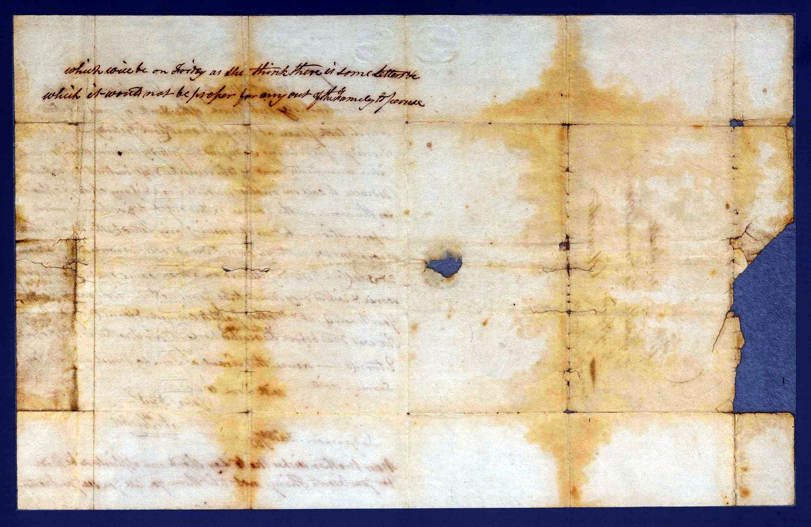

Lodgemore, December
A death, written in haste and grief: Sarah's Aunt Pitt has died at Cirencester, before the family could reach her.
And, folded into the sorrow, an instruction — some of the dead woman's letters must not be seen by anyone outside the family.
Excuse this Scrawl as I am so much agitated I can scarcely write.
William Tucker, writing the same day.
The reading is given first as written, then in plain modern paragraphs. Dotted words are uncertain; square brackets mark readings to confirm.
The letter
In plain reading
Dear Sarah,
It is with much grief I have to communicate the melancholy intelligence of the death of your Aunt Pitt, which took place at half past one o'clock yesterday. We had no knowledge of her being indisposed until yesterday morning, when your Uncle John immediately went off to Cirencester and left instructions with Mr Bidwell to call in another medical man, and — if any change appeared for the worse in the course of the night — to give him immediate information.
But not receiving any letter by the mail yesterday morning, we naturally concluded she was not worse. Then, between two and three o'clock in the afternoon, a man came down to say she was worse and wished very much to see your mother. In a quarter of an hour your uncle, aunt and mother posted to Cirencester — and found that your Aunt Pitt was dead before they reached her. Your mother is this moment returned.
Excuse this scrawl, as I am so much agitated I can scarcely write. With love to all,
Yours affectionately, Wm Tucker. Lodgemore, December […] 1833.

The postscript
In plain reading
Your mother wishes me to say that, should any application be made for your aunt's things, they are not to be let go until you see your mother — which will be on Friday — as she thinks there are some letters which it would not be proper for anyone out of the family to see.
A note on this letter
Written the same day, in grief and haste — “I am so much agitated I can scarcely write” — which is why this hand is harder to read than William’s calm 1827 letter. Aunt Pitt died at Cirencester before the family could reach her.
The postscript is the arresting part: the dead woman’s things are not to be released until Sarah’s mother arrives, because among them are “some letters which it would not be proper for any out of the family to see.” What those letters held, the record does not say.
Image reproduced from State Library Victoria, PAC-10009902. Reproduction is subject to the Library's permission and conditions of use.